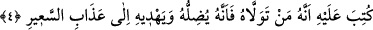
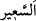
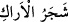

4. Onun (şeytan) hakkında şöyle yazılmıştır: Kim onu yoldaş edinirse bilsin ki
(şeytan) kendisini saptıracak ve alevli ateşin azabına sürükleyecektir.
“Onun (şeytan) hakkında şöyle yazılmıştır:” Yâni et-Te’vîlâtü’n-Necmiyye’de
belirtildiği üzere cinlerden ve insanlardan olan her şeytan hakkında bu hüküm
verilmiştir.
Kâşifî der ki: “O şeytan hakkında levh-i mahfuzda şöyle yazılmıştır:” “Kim onu
yoldaş edinirse” onu dost edinir ve ona tâbi olursa “bilsin ki (şeytan) kendisini
saptıracak” Çünkü şeytanın işi kendisini dost edineni Hakk’ın yolundan saptırmaktır
“ve” bizzat kötülükleri yapmaya sevk ederek “alevli ateşin azabına sürükleyecektir.”
Azâbın, şiddetle yanıp tutuşan ateş demek olan “__WORD__e izâfe edilmesi, “
(misvak ağacı)” ifâdesinde olduğu gibi açıklama içindir. Hasan Basrî’den
nakledildiğine göre o, cehennemin isimlerinden bir isimdir.
et-Te’vîlâtü’n-Necmiyye’de şöyle der: “Cinlerden olan şeytan kişiyi vesveselerle,
hoş göstererek ve şüphe sokarak saptırır. İnsanlardan olan şeytan ise öldükten sonra
diriltmeyi inkâr eden; vehim, hayal ve tabîatın zulmeti kirlerine bulaşmış akılların ileri
sürdüğü aklî delillerle istidlâlde bulunan hevâ ve bid’at ehlinin, filozof ve zındıkların
mezheplerine düşürerek kişiyi yoldan çıkarır. Onların şüphelerini delil sayar ve
akîdelerine sarılır. Sonunda onlardan biri olur ve onlardan sayılır. Nitekim Allah Teâlâ:
“İçinizden onları dost tutanlar, onlardandır.” (el-Mâide, 5/51) buyurmuştur. İşte bu
istidlâl ve şüphelerle onu “alevli ateşin azabına” Hak’tan ayrılık ve mahrumiyet
azâbına “sürükleyecektir.”
Bil ki insanın kemâli hakîkî ilimlerdedir. Bunlar ise dörttür: Birincisi, nefsi ve onunla
ilgili şeyleri bilmek/ma’rifet. İkincisi, Allah Teâlâ’yı ve O’nunla ilgili şeyleri
tanımak/ma’rifet. Üçüncüsü, dünyayı ve onunla ilgili şeyleri ma’rifet. Dördüncüsü,
âhireti ve onunla ilgili şeyleri ma’rifet.
Taklîd ehli istidlâl ehlinden aşağıdadır, onlar îkân (yakîn) ehlinden, onlar da ıyân
ehlinden daha aşağıdadır. Şu halde sâlike gereken ıyân mertebesine ulaşmak için gayret
etmektir. Bu ise kâmil bir mürşidin seyr ü sülûkten geçirmesi ile olur. Çünkü ondan
başkasına tâbi olmak menzile eriştirmez.
Molla Câmî der ki:
Hakîkat Kâbesine doğru gitmek istersen
Yolunu kaybetmiş mukallidin peşinden gitme
Iyan mertebesine ulaşınca kitapları yıkayıp suya vermek gerekir. Çünkü medlûle
ulaştıktan sonra delile ihtiyaç duyulmaz.
Mesnevî’de der ki: